Diretamente da Pensilvânia, Draculaura é uma das personagens de Monster High mais famosas. Ela foi enviada pelo pai, o conde Drácula, para estudar em Monster High. Possuidora de um dos traços mais marcantes de sua linhagem de vampiros, a pele pálida, a estudante também é facilmente reconhecida por seus cabelos pretos com mechas rosas, além de sua tradicionais presas afiadíssimas e suas orelhas pontiagudas.
Frankie
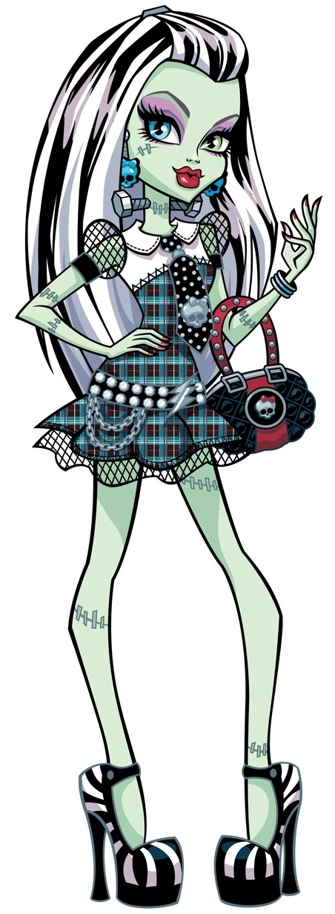
Feita a partir de partes de diversos seres humanos, seu sobrenome e os parafusos em seu pescoço entregam completamente os segredos de sua linhagem. Além de uma das princiapis personagens de Monster High, Frankie é filha de um dos maiores nomes do terror mundial, o assustador Frankenstein.
Clawdeen Wolf
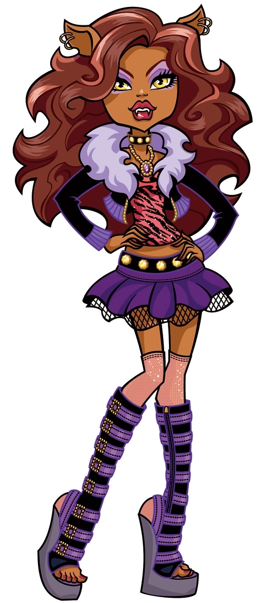
Pertencente a uma linhagem de lobisomens, esta personagem de Monster High tem como traço marcante o corpo completamente coberto de pelos castanhos, além de seu cabelo comprido, orelhas pontiagudas e presas. Clawdeen está sempre vestida com roupas com detalhes em roxo e estampa animal.
Lagoona Blue
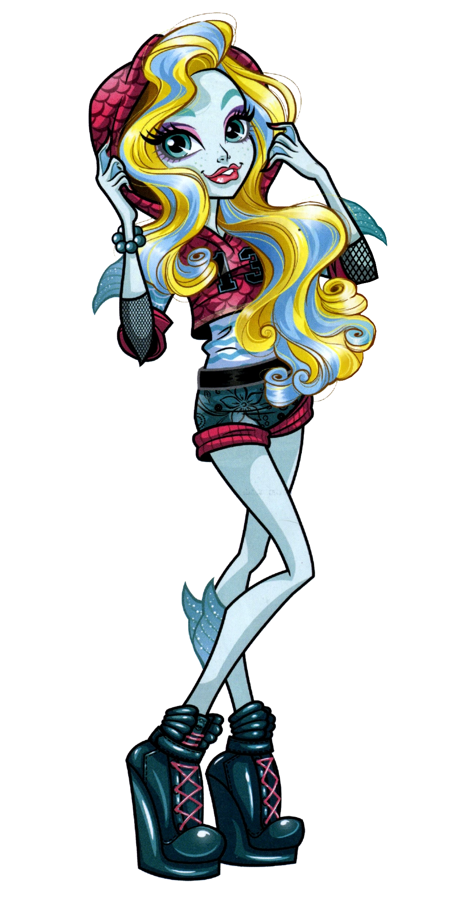
Pertencente a uma família de monstros marinhos que habita as profundezas dos oceanos, Lagoona Blue possui pele em tom azulado e tem seu corpo coberto por escamas, além de possuir pés espalmados e barbatanas nas laterais de seus membros inferiores. Seu cabelo loiro possui mechas em tom azulado, assim como seu nome também faz referência à cor.
Cleo
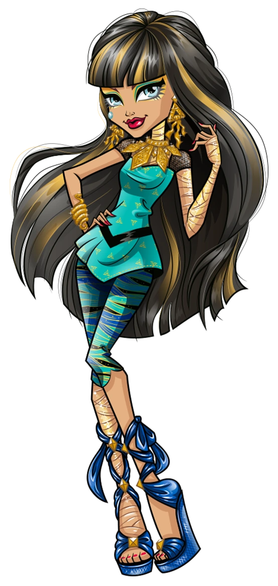
Coberta por bandagens douradas e joias de ouro, Cleo de Nile é pertence a uma linhagem de múmias e seu nome é uma referência direta a Cleópatra VII, a última e mais poderosa rainha do antigo Egito, terra natal dessa peculiar estudante. Além disso, seu apelido também é outra referência egípcia, porém, dessa vez, ao nome do rio mais importante do país, o Nilo.
Ghonfia Yelps
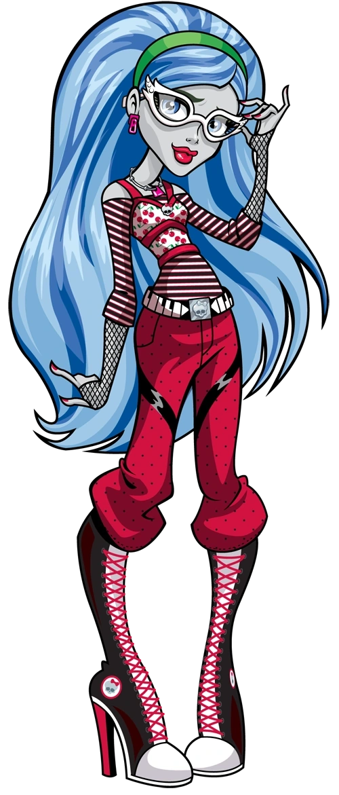
Certamente o mostro mais intelectual que você já viu, Ghoulia Yelps é filha de zumbis. Como caraterísticas marcantes a personagem de Monster High possui a pele pálida em tom acinzentado, cabelo azulado e é facilmente reconhecida por seus óculos de gato.
Abbey Bominable
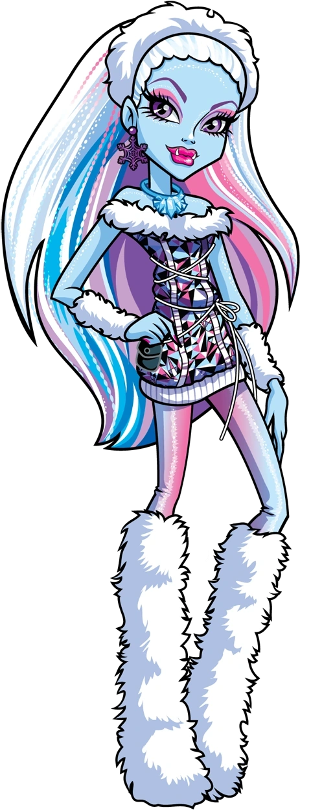
O Abominável Homem das Neves se mostrou um pai extremamente preocupado com a educação de sua filha ao enviá-la para estudar em Monster High. Natural da zona extremamente fria das montanhas, Abbey está sempre com um casaco peludo e botas de pele.
Spectra Vonderdeist
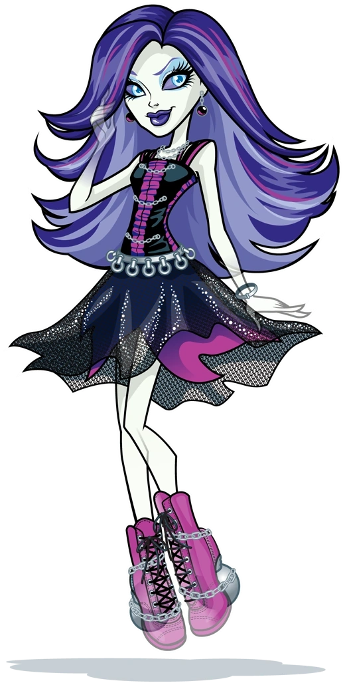
Filha de fantasmas, Spectra Vondergeist está sempre surpreendendo suas colegas de escola com seus truques fantasmagóricos que frequentemente se mostram extremamente úteis para as mais diversas situações. Seu sobrenome pertence a uma conhecida e respeitada família de fantasmas.
Toralei Stripe
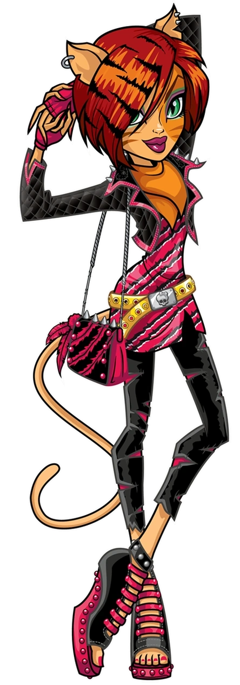
Toralei Stripe é filha de um homem-gato e, por ter assumido o papel de vilã, constantemente é vista em atrito com os demais personagens de Monster High.Toralei também é possuidora de um bichinho de estimação nada convencional: um filhote de tigre-dente-de-sabre chamado Dulce Comilo.
Operetta Phantom
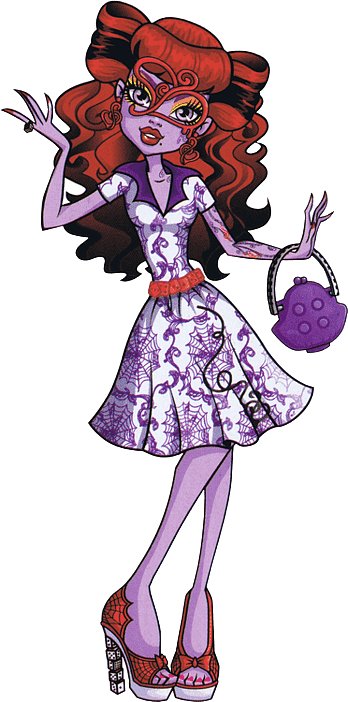
Diretamente das catacumbas de Monster High: Operetta Phantom, a filha do Fantasma da Ópera. Amante de tudo que envolve música, a personagem possui uma característica marcante e extremamente curiosa: uma marca de nascença no olho muito semelhante a uma colcheia, nome dado a uma figura musical.
Jinafire Long
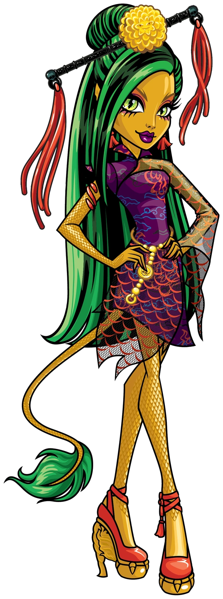
Jinafire é um dragão oriental tradicional, com escamas douradas, cabelo verde e preto, e olhos verdes de jade. Ela parece usar um vestido Hanfu com padrões de dragão e saltos altos.É um monstro com temperamento forte, impetuoso, corajoso e adora moda. Em seu perfil menciona ter um temperamento quente.
River Styxx
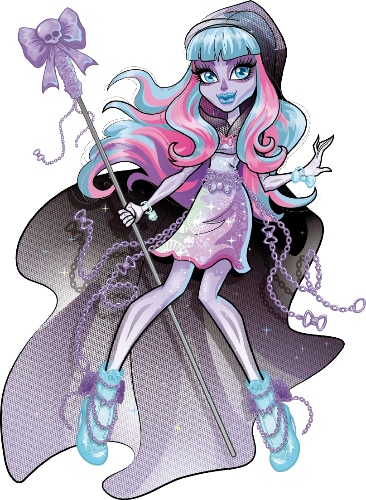
River é extremamente alegre, otimista e borbulhante, e adora cores brilhantes e doces. Ela tem um monte de energia e tem dificuldade para se concentrar e ficar parada. Embora, ela não tem maus sentimentos para assustar outros monstros.
Deuce Gorgon
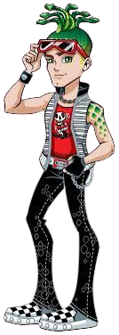
Deuce Gorgon,noivo da egípcia Cleo. Filho da popular e mitológica Medusa, Deuce possui uma particularidade: o poder de transformar em pedra tudo que olha. Por conta dessa peculiaridade, o personagem é sempre visto utilizando óculos escuros.
Clawd Wolf
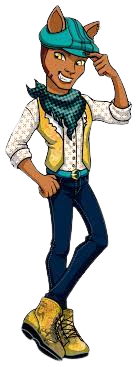
Clawd é muito amigável, extrovertido e gentil com os outros, especialmente com a sua namorada, Draculaura. Ele é um amigo leal e um líder natural, atuando como o capitão de várias equipes esportivas. Embora ele certamente não age sempre dessa forma, ele conhece maneiras e faz questão de outros meninos conhecê-las também.
Gillington "Gil" Webber
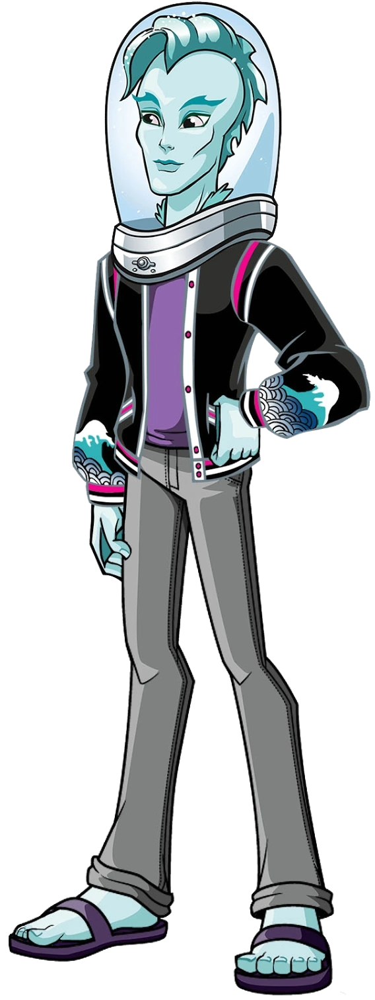
Gil tem pele azul clara (ou escamas) e barbatanas pontiagudas saindo do pescoço, antebraços e pernas. Ele tem uma barbatana grande no topo da cabeça, que é estilizada como um moicano e cai para o lado.Ele tem as habilidades de um monstro de água, mas a maioria deles vem de ser totalmente peixe.